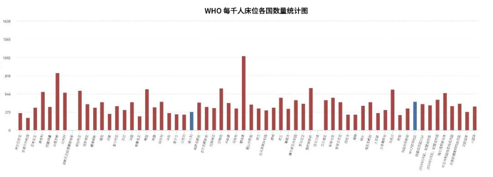
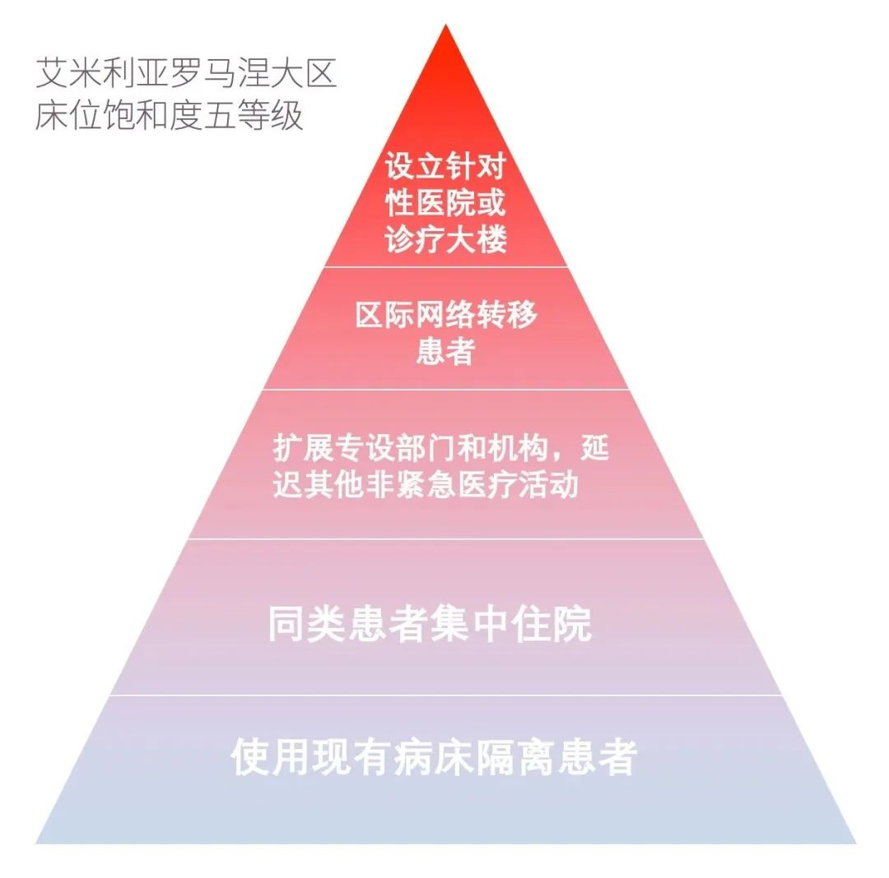
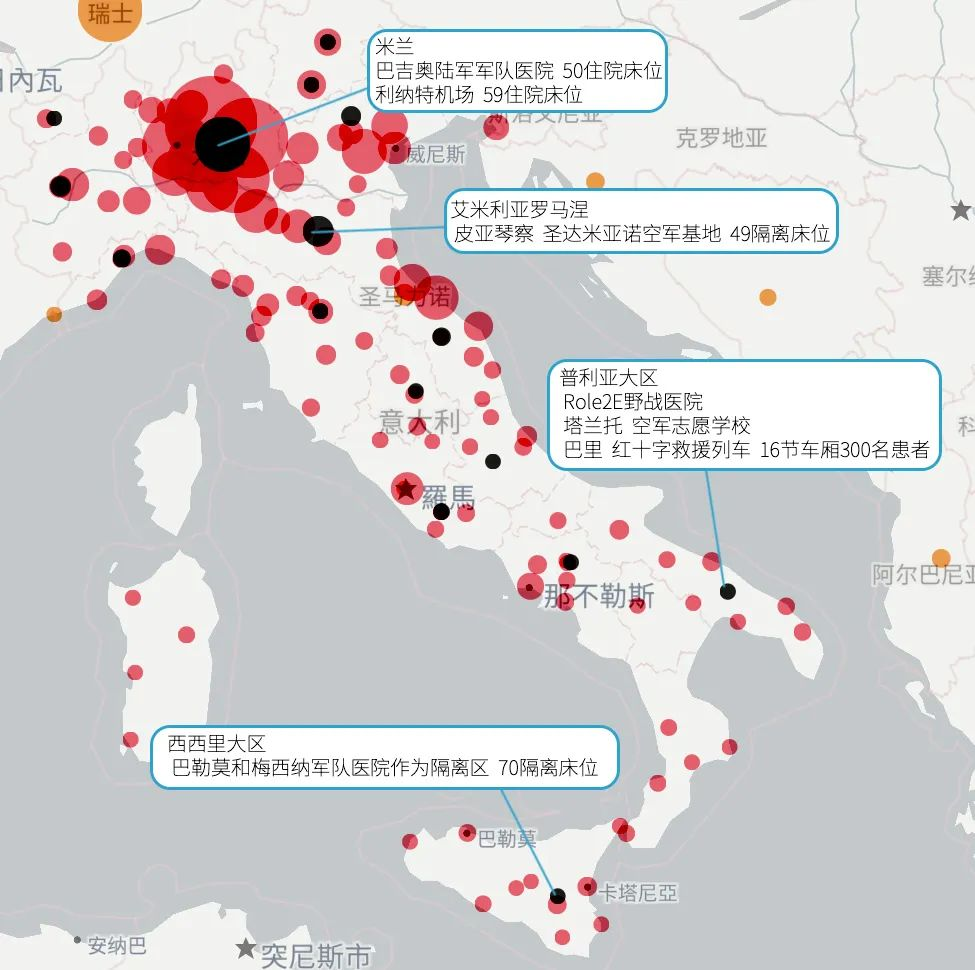

别信网络谣言了，真实的意大利防疫是这样的
原文链接 备份链接 本 文 约 3700 字 阅 读 需 要 8 min 在本文的开头，首先有必要让读者明白，作者的讲述绝非完全可信。 我在意大利住了十多年，又是媒体记者，这次意大利疫情爆发以后，很多媒体都来找我，甚至有人愿意出丰厚的稿 …
意大利坐拥全民免费医疗、在国际名列前茅的医疗水准与平均82.7岁的寿命预期，然而自新冠肺炎疫情爆发以来，急速攀升的确诊人数、居高不下的死亡率以及北部重灾区告急的医疗资源，令人在揪心的同时也满怀担忧：意大利的医疗资源的实际现状究竟是怎样的？按疫情发展趋势，医疗系统是否能抗住冲击？缺少外援的情况下，又有哪些机动资源可以调度？卫生部又是否及时采取了补救措施？
本文将从意大利医疗卫生系统在疫情前的基础资源情况出发，通过整合疫情应对流程、原有资源消耗现况以及新增资源筹备等不同方面的信息，介绍本次新冠疫情带来的种种影响和意大利医疗卫生系统的抗疫举措。
- 医疗卫生系统简介 -
概况
现行的意大利医疗体系建立于1978年，八、九十年代逐渐成熟，近年亦在不断变革。宪法第32条赋予全体意大利公民以健康权，是为医疗体系与制度的法律基础。在《柳叶刀》2018年发布的世界各国医疗质量排名中 [1]，意大利在195个国家中位列第九，在国家财政投入、每千名居民平均拥有医务人员数量、医疗资源配备、疾病治疗效率、慢性病发病率、癌症存活率以及居民预期寿命等方面均有出色的表现。

图注1
意大利的医疗体系分为中央与地方（即各大区）两个主要层级。中央主管机构为卫生部 [2]，统领全国卫生事业，但必须充分尊重宪法赋予各地方的自主权力。除卫生部以外，中央医疗体系还包含其他十余个机构，包括罗马高等卫生研究院（ISS），在新冠肺炎疫情期间承担复核审定确诊病例的责任。各地的地方卫生局（Azienda Sanitaria Locale，简称 ASL）则在统一指令下拥有一定的自主权 [3]，通过地方健康机构及医院为公众提供健康保障，服务范围包括传染病预防、接种疫苗、门诊就诊和专科检查、社会保健、心理健康服务和临终关怀等等。意大利医疗资源基于地区分布也表现出巨大的不平衡。北部较发达地区总体卫生水平，较之南部以及中部的拉齐奥大区显著更高。
个人方面，居民可在地方卫生局注册加入意大利医疗系统并享受国民医保待遇，拥有医保卡并选择一位家庭医生（medico di base）或儿科医生。家庭医生通常是全科医生，与地方卫生局为协议合作关系，一部分家庭医生不属于任何医疗机构，在独立运营的门诊（ambulatorio）工作，也有一部分家庭医生与不同专科的医生在专科医疗中心（poliambulatori）工作。家庭医生作为基础医疗服务的一部分，主要负责常见轻微疾病的初诊并开具药方、开具其他疾病的专科转诊预约单、上门进行家庭看诊服务等。持专科转诊预约单的患者需要通过综合预约中心（Centro Unico di Prenotazione，简称CUP）在上一级医院的专科医生处进行预约，CUP提供网上、电话和当面（协作的家庭医生与药房或医院柜台）等多种预约途径。
在较为紧急的情况下，患者可跳过家庭医生这一环节，联系急诊值班医生以获取服务。若发生更为紧急的情况，患者可自行前往或通过呼叫118急救专线利用救护车前往医院急诊中心（Pronto Soccorso），随后根据分诊护士的初检分级进入候诊或看诊流程。118急救服务在不同地区可能由不同上级机构（大区紧急医疗局、地方卫生局或118运营中心）运营指挥，但其急救车及第一急救人员通常来自社会合作、私营企业或志愿协会（例如红十字会），隶属公共部门的医生/护士视具体情况可随车前往，特殊紧急情况下公共部门也为118急救提供直升机救援服务。
资金
具体而言，公民的医疗保障采取多轨结构。首先是国家面向全体公民的公共卫生服务，以广泛、均等和公平为宗旨；其次是保险性质医疗基金，由公司或个人投入，仅作补足医疗资金之用，不用于盈利；最后则是公民个人额外的医疗保险投入。
对于公共医疗保障，其资金来源主要有两个途径：税收与医疗服务的收入。前者拨款约占公共支出的14% [4]，后者包括患者在医疗机构内诊断与治疗时支付的款项，国家根据患者的不同经济等情况进行减免或报销。这笔医疗资金中有大约一半交由地方分配，另一半主要供给医院，另有约5%用于社区的疾病预防工作。根据2018年的统计数据，大约23.7%的医疗费用来自公民个人支出，政府支出的比例与金额在世界上均属前列，但比起其他欧盟国家平均水平较低。本次新冠肺炎疫情中，意大利的检测成本为30欧元 [5]，开销全部由意大利国家承担；重症监护病房一个床位一天的开销约为1200-1500欧元 [6]，以每位重症病患需要约两周的重症监护治疗计算，意大利国家需要为每人花费约20000欧元。
意大利高企不下的重症率（8.5%）与死亡率（6.8%）为医疗系统带来了极大的压力。截止3月15号18点，意大利总收治人数为11335人，其中1672人需要重症监护，而接近半数集中在伦巴第大区（卫生部数据）[7]。国家为应对疫情紧急拨款250亿欧元 [8]，然而在资金问题外，北部疫情重灾区的燃眉之急是病床数量吃紧。
床位
根据公共卫生系统2017年的年度报告 [9]，意大利共有床位169978张，平均每千人床位数仅为3.7张，而这一数字在南韩为12.27，接近意大利四倍，德国也以千人8.3张的水平位列前列（世界银行数据）[10]。
每十万人平均床位数随时间变化图


图注2
（各国千人床位统计中左边蓝色为意大利数据，右边蓝色为欧洲平均数据）
伦巴第大区是意大利医疗水平最高的大区，床位数约占意大利总数的18%，共29964张。全意重症监护病房共5090间，其中伦巴第大区有859间，另有724张带呼吸器的病床。

图注3
在公立医院之外，私立医院和医疗机构也占据不小的比重。私立医疗为意大利医疗提供了26.5%的服务，财政支出占总卫生系统拨款的17%。私立机构共有病床39079张，占总数的22%，另有重症监护病床1300张。

图注4
但本就紧张的床位数与医护人员数量更是连年下滑。这与医疗拨款削减、医药专业教育投入不足、年轻医师大量外逃、医护队伍年龄结构老龄化等原因相关。
根据Mario Negri 研究学会与贝加莫大学合作在柳叶刀上发表的预测 [11]，意大利在三四周后将会需要4000张重症病床，这基本达到医疗系统的限度。在本就疲弱并已不堪重负的状态下，面对新冠疫情危机，意大利医疗系统做出了哪些应对措施呢？
- 新冠疫情中的诊疗 -
总体流程
意大利在收治流程上也遵循了前述的分级制度，中央与地方各司其职。出现疑似新冠肺炎症状的患者，可以拨打由卫生部开通的新冠疫情1500咨询专线以获得诊治协助 [12]，宪兵专线112、急救专线118也共同接收疫情急救报告。此外，各地区本地卫生局（ASL）也会主动追踪和检测确诊者的密切接触者，疑似患者亦可通过本地绿色热线或ASL登记的家庭医生报告病情、寻求协助。

1.检测
检测分流
接线员或家庭医生会根据“新冠病毒感染风险评估和自我评估表”收集信息，判断病情程度并给该患者匹配相应诊疗方式：医护人员上门检测进行咽拭子采样，或送往医院相应部门。若是轻症表现，患者可留在居所，在全科家庭医生的指导下居家治疗（详情见下文）。
对于需要前往医院的患者，为避免交叉感染的风险，意大利各医院在急诊室前设立了预分流帐篷 （tenda pre-triage）。其作用是在患者进入医院前对其身体状况进行评估。帐篷内配有一名医生，一名护士以及一名社会卫生工作人员。所有前来就诊的患者需首先进入预分流帐篷，进行测体温以及病史调查等检测步骤，没有表现出新冠肺炎症状的患者将被转移至急诊室进行常规治疗，而如患者确有疑似新冠肺炎的症状，医护人员会跳过急诊部，直接与传染病科的负责医生沟通，来确定该患者的去向；如患者情况需收治，则通常住在传染病科普通病床或亚重症病床；如患者情况严重，将被直接送往重症监护室（Terapia intensiva）。
检测标准
意大利当局通过参考韩国疾病防控中心（KCDC）检测模式，以“针对性、快速、尽早检测” 为原则[13]。采样需专业人员严格进行操作 [14]，大部分在报告者家中完成，或由专业人员按流程经隔离通道将报告者带至指定医院进行采样。如四十日谈前期推送所介绍的（点击查看文章） [15]，按照卫生部的决策 [16]，现在意大利不对无症状人员进行检测。这符合欧洲疾控中心（ECDC）的检测标准 [17]，即需要同时满足“有症状”和“有接触史”这两个条件；在症状特别严重的情况下，没有接触史的人员也需要进行检测。然而，ECDC同样指出，之前无症状阳性感染者也应当被计入统计数据，这在高级卫生研究院（ISS）的统计报告中有所体现 [18]。
检测能力
采样后第一步测试由该地区的大区参考实验室或经认证拥有同等检测资质的病毒实验室完成 [19]。负责第一步初筛检测的病毒实验室，除15个大区参考实验室以外 [20]，现在当局也动员全国拥有同等检测水平、并经罗马高级卫生研究所（ISS）认证的微生物及病毒实验室参与到防疫诊断工作中，包括医疗机构、大学的实验室，共计44所 [21]。由于当前所用的检测技术会造成大约1-4%假阳性的误差，因此初检呈阳性的样本需要报送至 ISS 进行复检，并将最终结果告知当局。
意大利当前使用的咽拭子采样套装由布莱西亚（Brescia）企业Copan研发生产 [22]。咽拭子在病毒实验室经灭活、提取RNA、PCR（聚合酶链反应）扩增和分析等步骤，到计算机输出结果需大约四小时 [23]。共和报报道，当局同时在等待以色列生物技术企业BATM的新型新冠肺炎诊断试剂盒获得欧洲CE医疗设备认证 [24]，其后将在罗马由Adaltis工厂进行生产，该新型试剂盒可将测试成本降至0.26欧元。
2.居家隔离
为避免疫情大面积传播以及医疗系统过载，罗马高级卫生研究院于2020年三月7日发布了居家隔离的相应措施 [25]，隔离期限至少为14天。需要进行居家隔离的人为两类：
与新冠肺炎病患有过密切接触的人 ，包括无症状、有轻微症状并且检测结果呈阳性、有轻微症状并且检测结果呈阴性三类
痊愈并已出院，但检测结果仍呈阳性的人
居家隔离的当事人需得到公共卫生工作人员的协助，具体实施细则参见上一期推送，即“法令解读”（点击查看文章）[26]。简言之，居家隔离的当事人需严格遵守佩戴口罩、避免接触、消毒等卫生规范，早晚两次测体温，并与公共卫生工作人员或者全科医生及时沟通新出现的症状。当与同一空间内的其他人直接接触无法避免时，例如哺乳期的母亲或需要协助的老年人与行动不便人士，需做好自身清洁与协助人防护。
居家隔离基本为信任隔离，同时，社会也对隔离展开协助，包括评估居住条件以及防护用品是否充足，对无人照管的当事人给予援助并对隔离人群提供心理援助。
3.住院治疗
收治地点
为给新冠肺炎患者入院提供便利，各大区自行准备收治计划安排公立和私立医疗机构。以艾米利亚罗马涅大区为例，该大区就床位饱和度划分五个等级 [27]：

第一级，使用现有病床隔离患者；
第二级，同类患者集中住院；
第三级，扩展专设大区域的部门和机构，转移和暂停其中非紧急，可延迟的医疗活动，为疫情需要挪出更多可用空间；
第四级，使用区际网络将患者从最饱和的医院转移到可用性更高的医院。
第五级，设立专门针对新冠肺炎患者的医院或诊疗大楼：它们为中小型的建筑（约150-200张病床），配有重症监护病床或半重症监护病床。
大区的医院资源配置利用随疫情情况而变化。在大区各地原有的救治枢纽（HUB）之外，一些医院（或部门）转型成为新冠肺炎专门医院（Ospedale Covid）。以艾米利亚罗马涅大区为例，各地的新冠肺炎专门医院分布为：皮亚琴察（3）、帕尔马（1）、雷焦（2）、摩德纳（1）、博洛尼亚（2）、费拉拉（1）、罗马涅（5），同时有约6家医院待命。
另外意大利国防部在全国各地以军用医院为据点 [28]，于3月3日确认已准备2200间病房、6600床位可用于收治新冠肺炎患者，并将分派军医和护士进入中心疫区。

图注5
新增病房
在民防部门和国防部等多方协助下，数个大区正在尽快加设重症监护床位、亚重症监护床位、普通床位和隔离监控设施，以应对日益严峻的疫情。详情总结如下图：

图注6
日前，在意大利劳工总联合会秘书长Maurizio Landini倡议下，意大利各地私立医院协会积极响应，协同抗疫。目前，伦巴第的私立医院已腾出70%的非紧急床位给新冠患者使用 [29]，其中包含223张重症病床，另有150张将在短期内投入疫情治疗。
患者转移
据晚邮报 [30]，伦巴第大区已着手将临床情况稳定的新冠肺炎病患转移至医院外的护理地点，如专门进行肺部康复的机构或者养老院等社会卫生机构。评判标准为：患者未具有威胁生命的心律失常症状，血红蛋白高于7%，体温低于37摄氏度，血小板和白细胞指数在正常并且没有手术指征和高风险肺栓塞。
此外，为减轻伦巴第大区医疗负荷，也有一些其他疾病的重症患者被转移到其他大区的重症监护室进行进一步治疗。目前已在民防部专员安杰洛·博雷利（Angelo Borrelli）和意大利紧急医疗行动远程调控中心（CROSS）的协助下 [31]，启用救护车和直升机作为转移工具向拉齐奥、利古里亚、托斯卡纳、弗留利、皮埃蒙特、普利亚大区转移了30名患者。转移患者时，需在交通工具内部安置小型的重症护理设备，并安排专业医护人员，但此类人员目前十分稀缺。
治疗、药物和医疗器械
治疗方法取决于患者的症状程度 [32]。对于并发症最严重的患者（约占总数的10％），需要入住重症监护室以辅助人工通气。针对氧气饱和度不足的患者，为了支持呼吸功能，使用无创通气工具。针对对吸氧治疗没有足够反应的患者，使用CPAP（持续气道正压通气）。而对于对CPAP没有足够反应的患者，如果出现严重的供氧不足，可进一步进行有创机械通气呼吸机疗法。
最严重的情况下考虑使用体外膜肺氧合设备（Extracorporeal Membrane Oxygenation，ECMO），抽取血液至外部机器中并充氧，在保持心脏和肺部休养的情况下，立即进行重新输注。除了呼吸支持外，在重症监护室中，还可以保证帮助患者持续进食、服用药物，并在必要时导出脑部、胸腔和腹腔的积液。
3月3日，公共行政采购中心（CONSIP）结束了为医院重症和亚重症监护服务提供3918台呼吸机的招标。首批119台呼吸机在三月12日交付，200台在四到七天之间交付，886台在八到十五天之间交付，2713台在16到45天之间交付。Siare Engineering公司在其中提供了300台设备。
药物方面 [33]，意大利将参加由吉利德科学公司（Gilead Sciences）推动的第三期临床实验的两项研究，以评估瑞德西韦实验分子对确诊为新冠肺炎的住院成年人的疗效和安全性。研究将初步在米兰的萨科医院、帕维亚圣马特奥综合医院、帕多瓦医院公司、帕尔马大学医院以及罗马Lazzaro Spallanzani国家传染病研究所等地点开展。意大利与意大利药品管理局（AIFA）合作，正在把新冠病毒重疫区的其他医疗中心划分出来，以纳入研究。由于监管机构尚未批准瑞德西韦在临床试验以外的治疗用途，目前，非试验点医院仅可在严重紧急情况下，且没有其他有效治疗选择时，对新冠肺炎患者进行同情用药。
4. 其他疾病的病患（慢性病、孕产妇、急诊）
虽然疫情吃紧，意大利并未停止对其他疾病患者的救治。伦巴第大区指定18家枢纽医院 [34] 面向非新冠肺炎的其他紧急患者，包括处理重大创伤、神经外科手术、神经性卒中、介入心脏病学、心脏外科和血管外科急诊。枢纽医院必须保证24小时不间断地收治不可延误治疗的重症患者，并保证多个可靠团队的运行，其中至少有一个团队需为可能出现的新冠肺炎患者保证隔离并独立的治疗途径。其他公立和私人机构经认可并达成合同后可以提供协作。同时枢纽医院减少非急症门诊和手术，以确保集中医力救治重症患者，例如圣拉法埃拉医院宣布计划中的外科手术治疗仅向不能推迟的严格紧急新发疾病开放 [35]。
3月8日，伦巴第大区主席阿蒂利奥·丰塔纳（Attilio Fondana）和卫生委员朱利奥·加莱拉（Giulio Gallera）领导的特殊委员会决定尽快为其他患者腾出重症监护室以及急性病病院中的床位，同时在手术室，走廊以及恢复室内增设病床，但是这些病床增设的速度远远赶不上患者增加的速度，同时也无法达到完全隔离的标准。克雷蒙纳、洛迪、贝尔加莫等地的医院已经达到满负荷状态。
其他地区如皮埃蒙特 [36]、艾米利亚罗马涅 [37]、托斯卡纳 [38]、拉齐奥 [39]、利古里亚 [40]、马尔凯 [41] 等大区的综合预约中心（CUP）暂停一般医疗活动的门诊、检查和治疗预约，仅保留代码U（紧急）和B（短期）的医疗活动：不能推迟的治疗/康复治疗如化疗和放疗、输血、正在进行的实验治疗方案、代替疗法，以及旨在激活和/或随访的诊断流程如疫苗接种、癌症筛查、外科术后检查；已预约的诊断性治疗及程序、全身麻醉治疗，如腰椎穿刺、髓样穿刺、核磁诊断和CT诊断等紧急或不可延期的活动；石膏固定或拆除活动；透析治疗等。
此外，部分特别专科医院也调整诊疗活动，如热那亚加斯里尼儿科医院保留孕期和生育保护期间的产前诊断 [42]、时间依赖性新生儿筛查（新生儿超声波、声学筛查及红光反射测试和囊性纤维化筛查等），但取消产前课程。
5.痊愈与出院
2月28日，卫生部发布文件 [43]，分别定义了新冠肺炎的“临床学痊愈（clinicamente guarito）”和“痊愈（guarito）”。卫生部认为，如果一名感染患者表现出临床症状，随后症状消失（即变为无症状），可以认为已被临床学痊愈。临床痊愈者仍可能在病毒检测中呈阳性。而完全的痊愈者（guarito），指的则是临床学痊愈后，至少在间隔24小时的连续两次检测中均呈阴性的人员。还需另外区分SARS-CoV-2病毒完全清除（clearance/eliminazione）的情况，标准更加严格。
欧洲疾控中心（ECDC）指出 [44]，在医疗资源充足的情况下， 患者出院应基于临床学、病毒清除与血清学三个标准，但在紧张局势下，标准会有所调整。ECDC还指出，轻症患者可以提前出院，惟需保证在符合标准（例如提供通风条件良好的单人间、佩戴口罩、减少与家庭成员接触、单独进食、保证手部清洁、禁止外出）的条件下进行14天的隔离，并跟踪患者的健康状况。
此前，《新闻报》（La Stampa）有报道过一例81岁女士的痊愈案例 [45]。经过为期一周的住院治疗，Armanda Bottini临床学痊愈，并在三次病毒检测呈阴性后从帕维亚的San Matteo医院出院。报道指出，Bottini女士回家第二天就已经可以和家人共同进餐，与子孙玩乐。
截止3月15日晚18点，意大利达到该痊愈标准的患者为2335名，死亡人数已升至1809人。各大区痊愈率与死亡率统计图表如下：

图注7
此次疫情对意大利医疗资源最为雄厚的北部地区造成了巨大冲击，令医护队伍结构与人数、千人均病床数量等方面隐藏的问题浮上水面，而基于地区的医疗资源分布失衡现状也为意大利其他地区敲响了警钟。为亡羊补牢，各地卫生机构联合民防部和国防部等部门加快启动备用医疗资源，在巩固抗疫战力的同时，力图兼顾其他紧急医疗需求，并为重点疫区分担压力。另外，意大利医疗卫生体系在检测确诊程序以及隔离/出院观察程序的设计上，比较注重避免交叉感染的风险，为阻止疫情进一步扩大而未雨绸缪。
目前意大利的疫情发展尚不明朗。对抗病毒的战役无国界，望全球各地的抗疫行动早日迎来曙光，人们的生活回归安宁。
编写：橘子、西西
信息收集、整理、翻译：橘子、西西、喵喵、鸡、刘玥、刘京
图表制作：二鸟
参考：
[1] GBD 2016 Healthcare Access and Quality Collaborators, Measuring performance on the Healthcare Access and Quality Index for 195 countries and territories and selected subnational locations: a systematic analysis from the Global Burden of Disease Study 2016, May 23, 2018,
https://www.thelancet.com/journals/lancet/article/PIIS0140-6736(18)30994-2/fulltext#seccestitle190
[2]http://www.salute.gov.it/portale/home.html
[4]http://documenti.camera.it/leg18/dossier/pdf/AS0111.pdf
[8]https://www.ilsole24ore.com/art/coronavirus-conte-deliberato-stanziamento-25-miliardi-AD520VC
[9]https://www.ilsole24ore.com/art/perche-tanti-morti-lombardia-forbice-casi-confermati-e-reali-AD8cXXC
[10]https://data.worldbank.org/indicator/SH.MED.BEDS.ZS
[14]https://www.fanpage.it/attualita/cose-e-come-si-fa-un-tampone-faringeo/
[15]https://mp.weixin.qq.com/s/azwDfrhoeIDdZzYRl4d-vQ
[18]https://www.epicentro.iss.it/coronavirus/bollettino/covid-19-infografica_ita.pdf
[19]https://labtestsonline.it/news/litalia-si-prepara-ai-nuovi-casi-di-coronavirus-del-2019
[20]http://old.iss.it/arbo/index.php?lang=1&tipo=3
[22]https://www.wallstreetitalia.com/coronavirus-tamponi-chi-produce/
[23]https://tg24.sky.it/salute-e-benessere/2020/02/27/coronavirus-analisi-tamponi.html
[25]https://www.epicentro.iss.it/coronavirus/pdf/rapporto-covid-19-1-2020.pdf
[26]https://mp.weixin.qq.com/s/GjyKvrzgb5nEhZWTu2aiLw
[34]18家枢纽医院分别为：尼瓜达大都会医院、布莱西亚市民医院、瓦雷泽医院、贝尔加莫CTS若望二十三世教宗医院、米兰IRCCS贝斯塔医院、米兰IRCCS Humanitas医院、科莫圣安娜医院、帕维亚IRCCS圣马特奥医院、曼托瓦卡洛波马医院（与克雷莫纳团队合作）、雷尼阿诺医院、蒙扎圣杰拉多医院、莱科医院、布莱西亚复合救护医院、桑德里奥医院、圣保罗医院、圣拉法埃拉医院、IRCCS圣多纳多医院、蒙齐诺IRCCS医院。
[35]https://www.hsr.it/covid-19-domande-frequenti-visite-ospedale
[37]https://www.ilrestodelcarlino.it/cronaca/coronavirus-marche-12-marzo-1.5065392
[38]http://www.livornotoday.it/cronaca/coronavirus-livorno-ospedale-covid-ricovero-positivi.html
[39]https://www.salutelazio.it/nuovo-coronavirus
[41]https://www.ilrestodelcarlino.it/cronaca/coronavirus-marche-12-marzo-1.5065392
[44]https://www.ecdc.europa.eu/sites/default/files/documents/COVID-19-Discharge-criteria.pdf
图注：
[1] 图片来源：《柳叶刀》2018年发布的世界各国医疗质量排名
[2] 两图表来源：WHO
[3] 图表数据来源：
http://www.salute.gov.it/imgs/C_17_pubblicazioni_2879_allegato.pdf
[4] 图表数据来源：
https://www.quotidianosanita.it/cronache/articolo.php?articolo_id=79185
[5] 背景疫情地图来自: Lab24
图表数据来源：
https://www.ilgiorno.it/milano/cronaca/coronavirus-ospedale-baggio-1.5058897
https://www.ilgiorno.it/milano/cronaca/coronavirus-1.5063853
https://www.messinatoday.it/cronaca/ospedale-militare-zona-quarantena-regione-coronavirus-.html
[6] 背景疫情地图来自: Lab24
图表数据来源：
https://www.ivg.it/2020/03/coronavirus-ipotesi-navi-militari-per-le-terapie-intensive/
http://www.genovatoday.it/cronaca/coronavirus-genova-liguria-oggi-185-contagiati.html
https://liguriaoggi.it/2020/03/12/coronavirus-un-bambino-di-11-mesi-ricoverato-allospedale-gaslini/
https://www.lanazione.it/la-spezia/cronaca/coronavirus-liguria-quarantena-1.5061806
http://www.livornotoday.it/cronaca/coronavirus-livorno-ospedale-covid-ricovero-positivi.html
[7] 图表数据来源：意大利卫生部
- 推荐阅读 -


原文链接 备份链接 本 文 约 3700 字 阅 读 需 要 8 min 在本文的开头，首先有必要让读者明白，作者的讲述绝非完全可信。 我在意大利住了十多年，又是媒体记者，这次意大利疫情爆发以后，很多媒体都来找我，甚至有人愿意出丰厚的稿 …
原文链接 备份链接 凤凰新闻客户端 凤凰网在人间工作室出品 打开凤凰新闻客户端，搜索「在人间」并关注 我是深圳市第三人民医院肝病科的一名医生。春运期间，成千上万的武汉人涌入深圳。随着武汉疫情爆发，深圳也成了新冠病毒的“重灾区”。 1月22 …
原文链接 备份链接 凌晨，尿毒症患者小黄鸟终于做完了透析回到家；身在湖北的Iris突发胆囊疾病，因疫情生扛2天后终于决定就医；北京的周迎夫妇每日如坐针毡，不知道因疫情推后的恶性肿瘤手术何时能开始…… 抗击新冠肺炎是一场全民的战争。然而，在 …
原文链接 备份链接 口述实录·火线 养兵千日用在一时，大型公共卫生事件一发生，这些关键的“苦”学科就会为国计民生，甚至民族存亡提供重要保障。 记者｜黄 祺 武汉新冠肺炎的救治压力趋缓，无论是普通市民还是医护人员，都期待着疫情彻底结束的这一 …
原文链接 备份链接 非肺炎患者，是一个疫情出现前不曾有过的词语。新冠病毒重塑了经济、公共空间以及人们的日常生活，像涟漪一般扩散，将原本看似在外围的人收纳进被影响的范围。交通封锁，物流不畅，医院被征用，医生被调走，种种问题出现，波及到新冠肺 …